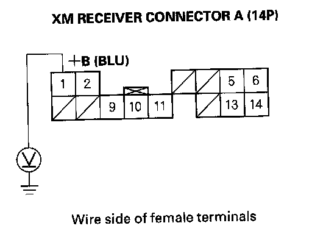
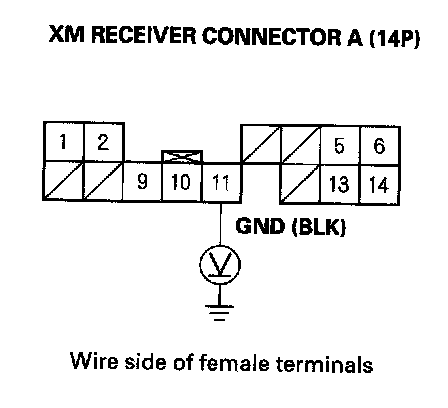

Error Code: XM No Signal or XM Antenna Is Displayed
Error code: XM NO SIGNAL or XM ANTENNA is displayedNOTE: Check XM radio reception in an open area. Poor reception/interference can be caused by tall buildings, mountains, or high-voltage power lines.
1. Park vehicle outside with a clear view of the southern horizon.
Does XM radio receive a signal?
YES - Reception interference operation is normal.
NO - Go to step 2.
2. Check XM antenna connector B (2P) at XM receiver.
Is XM antenna connector B connected?
YES - Go to step 3.
NO - Reconnect XM connector B, recheck XM radio operation. If the signal restored, operation is normal. If signal not restored go to step 3.
3. Turn the ignition switch to accessory (I).

4. Measure the voltage between XM receiver connector A (14P) No.1 terminal and body ground.
Is there battery voltage?
YES - Go to step 5.
NO - Repair open in the wire between navigation unit and XM receiver connector A (14P) No.1 terminal.

5. Measure the voltage between XM receiver connector A (14P) No. 11 terminal and body ground.
Is there less than 0.1 V?
YES - Go to step 6.
NO - Repair open in the wire between XM receiver connector A (14P) No. 11 terminal and body ground (G505).
6. Substitute known-good XM antenna.
Does the XM radio receiver a signal?
YES - Replace XM antenna.
NO - Substitute known-good XM antenna subharness. If XM radio receives signal, replace original XM antenna subharness. If the XM radio does not receive a signal, substitute a known-good XM receiver unit.